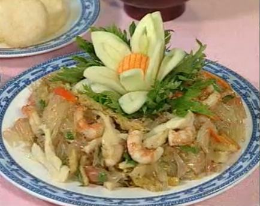

Cùng bắt tay làm thử thôi nào!
Nguyên liệu
Hai cây mì căn và một lá mì căn lẻ có tổng trọng lượng 100 gram.
100 gram tôm chay
Một trái bưởi. Bạn có thể chọn bất kỳ loại nào, nhưng yêu cầu múi bưởi khô, rời, không quá chua để khi trộn không bị chảy nước, làm ảnh hưởng hương vị món gỏi. Loại tốt nhất khuyến khích bạn nên dùng là bưởi da xanh.
Một ít rau răm
2 muỗng canh dầu hào chay
Chanh, ớt, đậu phộng
Muối, tiêu, đường, tỏi bằm
Bánh phồng tôm
Thực hiện
Ướp tôm chay với ½ muỗng cafe tỏi bằm, ½ muỗng canh dầu hào, tiêu, ¼ muỗng canh đường, và ¼ muỗng cafe muối và trộn đều.
Chiên mì căn: cho 1 chén dầu ăn đủ để chiên vàng 2 nguyên liệu mì căn. Mì căn đã được làm chín, do đó, ta chỉ chiên để mì căn có lớp vỏ vàng đẹp mắt. Sau đó, xắt mì căn lá ra thành sợi có chiều dài 7cm và xé bằng tay theo chiều dài của mì căn cây.
Xào tôm chay: Chảo dầu còn dư, ta đổ ra tô khoảng 2 muỗng canh dầu và bắt dầu còn lại lên bếp. Cho ½ muỗng cafe tỏi băm xào qua lại một ít cho vàng, sau đó trút phần tôm vào và xào cho thơm. Trút tôm ra dĩa.
Pha chế nước trộn gỏi bưởi: Trộn ½ muỗng cafe muối, ½ muỗng canh dầu hào, ½ cafe tỏi, 3 muỗng canh đường, 1 ít tiêu và Vắt vào ½ trái chanh vào. Nếu hỗn hợp quá đặc, có thể cho thêm 1 muỗng canh nước tương.
Làm bưởi: Bưởi bóc sạch vỏ và cả vỏ lụa cho sạch. Dùng khoảng ½ kg múi bưởi. Tách từng múi bưởi ra thành các múi nhỏ (1 múi lớn ra tầm 10 múi nhỏ).
Trộn gỏi: Trộn tất cả các nguyên liệu mì căn, tôm chay, bưởi và nước trộn vào trộn đều. Sau cùng là cho rau răm cắt nhuyễn, 1 muỗng canh đậu phộng rang và ớt xắt sợi. Nếu thích chua nhiều hơn, bạn có thể vắt thêm chanh ở giai đoạn cuối này. Tuy nhiên, với gỏi bưởi chay hay gỏi bưởi mặn thì các bạn cũng không nên cho quá nhiều chanh sẽ làm hỗn hợp mất ngon.
Yêu cầu của món là vị chua nhẹ, ngọt, vừa ăn, bưởi không được ra nước nhiều. Trút ra đĩa và trang trí sao cho đẹp mắt là có ngay món ăn ngon cho cả gia đình rồi.